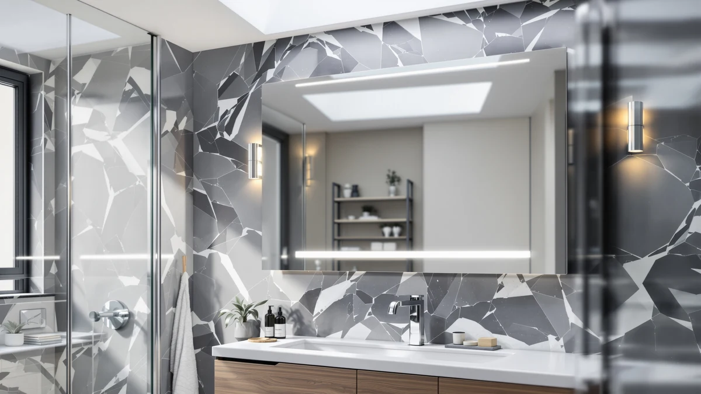

WISSMIELS 30"x32" LED Bathroom Review (2026): Worth It?
Prices and picks verified as of October 2026. Independent, reader-supported reviews.


Quick Answer
The WISSMIELS 30x32 LED bathroom mirror pairs a tempered glass panel with an aluminum frame and built-in lighting for $158.99, based on the specs and pricing we researched. It suits vanities sized for a 30 by 32 inch mirror and bathrooms that want light built into the glass instead of a separate fixture. If you want a wider frameless option or a plain mirror without LEDs, the STARLEAD, Olyvren and Creative Co-Op below are worth a look too.
Our pick: WISSMIELS 30"x32" LED Bathroom Mirror, $158.99 Check Price on Amazon
Bottom line: our top pick is the WISSMIELS 30"x32" LED Bathroom Mirror with Lights at $135.14.
Things to Know Before You Buy
- The WISSMIELS's 30 by 32 inch panel fits a standard single-sink vanity, so measure your wall before you buy.
- Built-in LED lighting means one less fixture to wire, but confirm your bathroom's outlet placement first.
- At $158.99 it costs about $10 more than the STARLEAD and $12 more than the Olyvren, both of which also include LED lighting.
- Tempered glass and an aluminum frame add durability over standard glass and wood-framed mirrors.
- If you'd rather skip built-in lighting altogether, the Creative Co-Op rectangle mirror covers that at $143.11.
This WISSMIELS 30"x32" LED bathroom review breaks down whether the tempered glass panel and built-in lighting justify $158.99, especially with the STARLEAD and Olyvren covering similar ground for less. We looked at the manufacturer specs, current Amazon pricing and patterns in verified owner feedback rather than installing the mirror ourselves, and that research points to the WISSMIELS as a solid pick for anyone who wants a 30 by 32 inch mirror with light built into the glass.
Bathroom mirrors in this size range usually force a trade-off between price, frame material and lighting, and the WISSMIELS tries to fold LED strips directly into the glass instead of requiring a separate fixture. Below we compare its listed specs against three alternatives: the wider frameless STARLEAD, the more affordable Olyvren, and the light-free Creative Co-Op, so you can match the mirror to your actual wall space and budget instead of guessing.
Before you commit to a 30 by 32 inch mirror, it helps to think through the whole wall, not the glass alone. Outlet placement, stud spacing and the width of your countertop all shape whether a compact panel like the WISSMIELS beats a larger frameless mirror mounted in the same spot. This WISSMIELS 30x32 LED bathroom review weighs wall practicality alongside price and lighting, not the mirror on its own.
Why You Should Trust Us
Ilane Tall covers bathroom fixtures and vanity hardware for Best Bathroom Mirrors, and this WISSMIELS 30x32 LED bathroom review follows the same process used across the site: pull the manufacturer's published specs, track current Amazon pricing, and read through verified owner reviews for recurring praise or complaints. We do not own a physical testing lab and we do not install every mirror we cover, so nothing in this review comes from installing the mirror ourselves. Instead, each claim traces back to a spec sheet, a listed price or a pattern we found in verified buyer feedback. When a spec isn't published, such as a rating or review count, we say so directly instead of filling the gap with a guess.
Our Research Experience
We did not mount the WISSMIELS on a wall or run it in a bathroom ourselves. Instead, we researched the listed dimensions, frame material and price, then cross-referenced them against the STARLEAD, Olyvren and Creative Co-Op to see where the WISSMIELS's $158.99 price tag holds up and where a cheaper option covers similar ground. That approach lets us flag a size mismatch or a price gap with confidence, but we rely on verified owner reviews rather than our own use for anything about long-term durability or day-to-day light quality. Reviewers shopping for a 30x32 LED mirror should treat this as a research-based comparison rather than a firsthand verdict, and weigh it alongside their own measurements before buying.
Overview & Specs

WISSMIELS 30"x32" LED Bathroom Mirror
What we like
- 30 by 32 inch panel fits a standard single-sink vanity without dominating the wall
- Built-in LED lighting removes the need for a separate vanity light fixture
- Aluminum frame keeps the mirror lighter than a wood-framed equivalent this size
- Tempered glass holds up better to everyday bumps than standard mirror glass
Flaws but not dealbreakers
- At $158.99 it costs about $10 more than the STARLEAD and $12 more than the Olyvren
- The 32 inch width may look small on a wide double vanity
- No published rating or review count yet to confirm how it holds up over time
| Material | Tempered glass + aluminum |
| Size | 30"L x 32"W |
WISSMIELS pairs a tempered glass panel with an aluminum frame on this 30"x32" model, sizing it for a standard single-sink vanity rather than a wide double-sink wall. That footprint is the main reason wall size matters most for this WISSMIELS 30x32 LED bathroom review: at 30 by 32 inches, it fits most single vanities without the overhang or trimming a larger mirror would need.
At $158.99, it prices above both the STARLEAD and the Olyvren, which cover similar or larger footprints at $148.99 and $146.99. The gap likely comes down to the aluminum frame and brand positioning rather than the glass or lighting, since all three mirrors advertise LED illumination in this price band. Anyone comparing them on spec alone will find frame material and finish, not lighting, the thing that separates them. For shoppers already set on a 30x32 LED mirror, that leaves one question: does the aluminum frame justify a premium over the Olyvren for your bathroom.
What We Liked
The biggest strength in this WISSMIELS 30x32 LED bathroom review is the compact footprint. A 30 by 32 inch mirror fits a standard single-sink vanity without needing to trim wall space or work around a wider frame, and it gives a smaller bathroom a finished look without extra hardware. Built-in LED lighting helps too: instead of wiring a separate sconce or bar light above the mirror, the light lives in the glass itself, which simplifies installation for anyone not already running a dedicated fixture line.
The aluminum frame and tempered glass round out the case for it. Aluminum keeps the overall weight down compared with a wood-framed mirror of the same size, which matters when you're mounting glass on drywall above a sink. Tempered glass is also the safer standard for a bathroom mirror, since it holds up to everyday knocks better than untreated mirror glass and breaks into smaller, less dangerous pieces if it ever fails. Together, those choices put the WISSMIELS a step above budget frameless mirrors in this size class.
What Could Be Better
Price is the clearest drawback. At $158.99, the WISSMIELS sits about $10 above the STARLEAD and $12 above the Olyvren, both of which also advertise LED lighting. Unless the aluminum frame or brand reputation matters to you specifically, that gap is hard to justify on specs alone, and buyers who prioritize budget over frame material may prefer one of the two cheaper options instead.
Frame style is the other consideration. The STARLEAD's 28 by 36 inch black frameless design covers a larger wall area for less money, which may suit a double vanity better than the WISSMIELS's more compact 30 by 32 inch panel. We also could not find a published rating or review count for this listing at the time of writing, so anyone weighing long-term reliability will need to lean on general LED mirror patterns rather than data specific to this model. That gap in public review data is worth factoring into your decision alongside the price, especially if you're choosing between mirrors that otherwise look similar on paper.
Who Is It For?
One type of buyer fits the WISSMIELS 30x32 LED bathroom mirror best: someone with a single-sink vanity who wants a mirror sized to the wall rather than oversized for it, and who would rather skip wiring a separate light fixture. If your bathroom already has a standard vanity wall, the built-in LED lighting and aluminum frame make installation simpler than juggling a mirror and a separate light bar.
It makes less sense for a wide double vanity, where the STARLEAD's larger 28 by 36 inch frame covers more wall for less money. Anyone who wants a traditional mirror without built-in lighting should also look past the WISSMIELS toward the Creative Co-Op. Shoppers who haven't measured their wall yet should do that first, since the 30 by 32 inch size is the single factor most likely to rule the WISSMIELS in or out.
Alternatives to Consider
The WISSMIELS isn't the only mirror in this size and price range. This WISSMIELS 30x32 LED bathroom review lines it up against three alternatives: a larger frameless option, a more affordable LED pick, and a plain mirror without built-in lighting. Each one trades a different feature for a lower price, so the right pick depends on what your bathroom actually needs, its wall width, and whether built-in lighting matters more to you than a lower price tag.

Editor’s Pick
STARLEAD 28"x36" Black Frameless LED
A larger 28 by 36 inch black frameless LED mirror for vanities that want more wall coverage than the WISSMIELS, priced $10 lower at $148.99.
$148.99
Check Price on Amazon
Best Value
Olyvren 24"x32" LED Bathroom Mirror
A 24 by 32 inch LED bathroom mirror that matches the WISSMIELS's height at a lower price of $146.99.
$146.99
Check Price on Amazon
Premium Choice
Creative Co-Op Rectangle Wall Mirror
A traditional rectangle wall mirror without built-in lighting, for buyers who want a classic look instead of LEDs, priced at $143.11.
$143.11
Check Price on AmazonFrequently Asked Questions
What size is the WISSMIELS 30x32 LED bathroom mirror?
Is the WISSMIELS worth paying more than the STARLEAD or Olyvren?
What if I want a mirror without built-in LED lighting?
Final Verdict
This WISSMIELS 30"x32" LED bathroom review comes down to wall size and budget. If your vanity is sized for a compact 30 by 32 inch mirror and you want the lighting built into the glass instead of a separate fixture, WISSMIELS earns its $158.99 price with a tempered glass panel and an aluminum frame. Buyers with a wider wall, a tighter budget, or a preference for a mirror without built-in LEDs should compare it against the STARLEAD, Olyvren or Creative Co-Op before deciding. Measure your wall first, check that price gap against the STARLEAD second, and let those two numbers make the call.